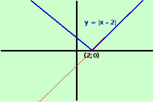

|
sviluppo Seguendo la definizione di Dirichlet dite se le seguenti espressioni rappresentano o meno una funzione reale di una variabile reale evidenziando quale e' l'insieme dominio e quale l'insieme codominio y = |x - 2| Pima sviluppiamo utilizzando la definizione di modulo utilizzando la definizione di modulo la funzione diventa
 Si tratta di una funzione perche' per ogni valore di x posso trovare un valore per y Il dominio e' tutto ℜ Il codominio invece e' l'insieme dei valori di ℜ maggiori od uguali a 0 a destra la rappresentazione grafica |